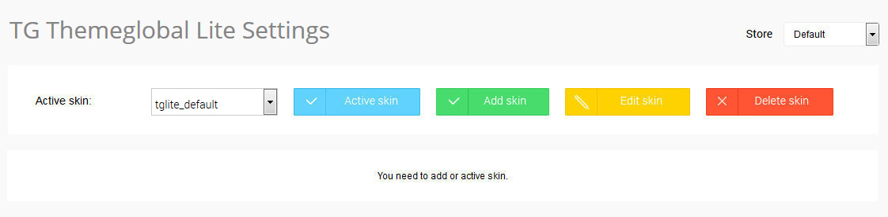
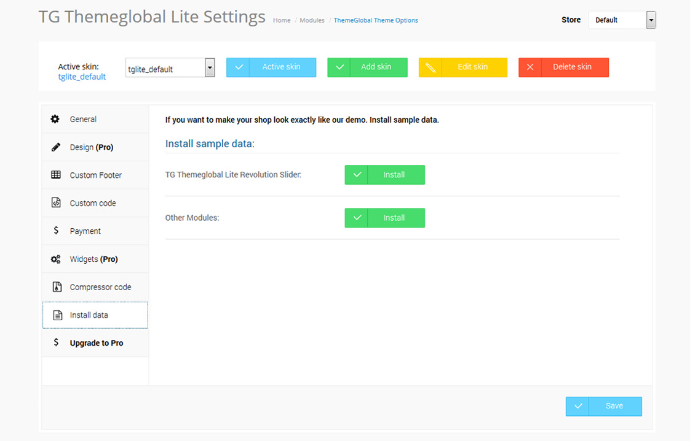

Before installing the ThemeGlobal Lite theme, it is assumed that you have a working OpenCart installation.
We recommend to use this theme on a clean installation or existing shops without custom modifications.
IMPORTANT! Although ThemeGlobal Lite doesn't overwrite any core files is a good practice to backup your files and sql database before making any upgrades or changes.
1Install Vqmod
This template requires Vqmod.
If you already have Vqmod skip this step. Otherwise, get the latest release here http://code.google.com/p/vqmod/downloads/list. Download the lastest vqmod-x.x.x-opencart.zip file.
Follow the instructions to install on your server http://code.google.com/p/vqmod/wiki/Install_OpenCart.
2Upload theme files
Unzip the "tg_themeglobal_lite_x.x.x.x_version_x.x.zip " you have downloaded from ThemeGlobal.com to a local folder on your computer. Enter the tg_themeglobal_lite_x.x.x.x_version_x.x.zip folder.
Select the folder that matches to your OpenCart version and upload all the files from "OpenCart x.x.x" to the directory you have installed OpenCart in.
The instruction how to configures the template to look like the DEMO SITE
We recommend to use this theme on a clean installation or existing shops without custom modifications.
IMPORTANT! Although ThemeGlobal Lite doesn't overwrite any core files is a good practice to backup your files and sql database before making any upgrades or changes.
1Enable TG ThemeGlobal Lite Settings and install Sample Data
Go to Admin > Extensions > Modules
Find a module name TG ThemeGlobal Lite Settings click on Install. After installing the module go to the editing of the module TG ThemeGlobal Lite Settings. You should see the image presented below:

From the list choose the skin tglite_default and press the button Active skin.
After activating the skin you should see the image presented below:

Go to Install Data tab and Press all Install buttons. After that click Save Button.
You can upgrade ThemeGlobal Lite to the Pro version to take advantage of expanded capabilities.
With ThemeGlobal Pro, you also get:
Here is how to purchase ThemeGlobal Pro: